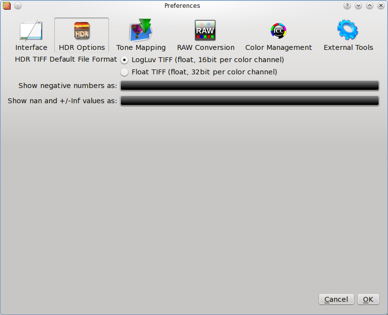

Here you can choose which TIFF-HDR format Luminance HDR will use to save an HDR image.
LogLuv TIFF is the appropriate format for most cases because it stores the hdr data in a reasonable amount of space (i.e. file size). Even if it is a 16 bit format, it can store floating point data.
The Float TIFF format has to be used only if you want to load your tiff in another application that cannot open the LogLuv format.
Click on the buttons to pop-up a window that lets you choose which color to use for the nan/inf and for the negative values.
